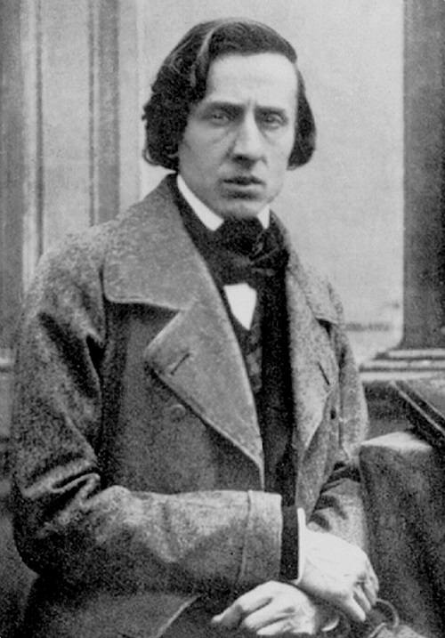
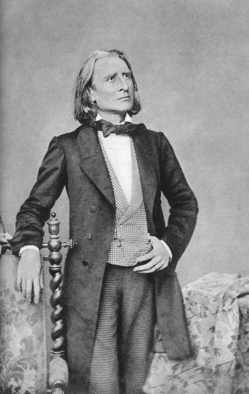
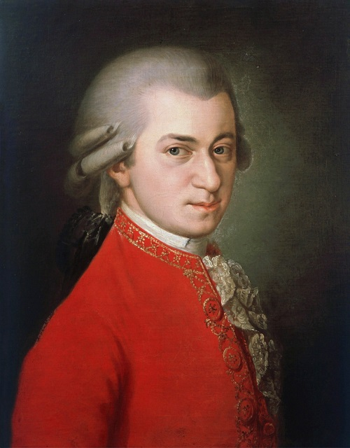
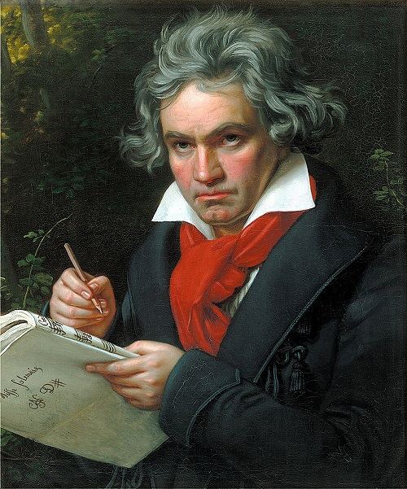
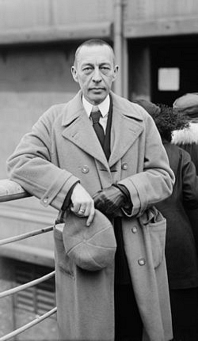

Najsłynniejsi Pianiści
1. Fryderyk Chopin
Jeden z najwybitniejszych kompozytorów i pianistów epoki romantyzmu. Uznawany za jednego z największych geniuszy w historii muzyki, zwłaszcza muzyki fortepianowej.
Życie i twórczość
- Dzieciństwo - Urodził się w Żelazowej Woli, niedaleko Warszawy. Jego ojciec, Mikołaj Chopin, był Francuzem, a matka, Justyna Krzyżanowska – Polką.
- Edukacja - Studiował w Warszawie w Szkole Głównej Muzyki. Już jako dziecko wykazywał ogromny talent – komponował i koncertował.
- Emigracja - W 1830 roku wyjechał z Polski i już nigdy do niej nie wrócił. Osiedlił się głównie w Paryżu, gdzie spędził resztę życia.
- Życie osobiste - Był związany m.in. z pisarką George Sand (pseudonim Aurore Dudevant). Ich burzliwy związek trwał prawie 10 lat.
- Pisał prawie wyłącznie na fortepian – jego utwory są pełne emocji, elegancji i narodowych elementów polskich.
- Mazurk - inspirowane polskim folklorem, np. Mazurki op. 7
- Polonezy - np.Polonez As-dur op.53
- Nokturny - nastrojowe, poetycki utwory np. Nokturn cis-moll op. posth.
- Etiudy - np. Etiuda Rewolucyjna op.10 nr 12
- Preludia, Walce, Scherza, Ballady
Najważniejsze gatunki w jego dorobku to:
Śmierć i dziedzictwo
- Chopin zmarł na gruźlicę w wieku 39 lat w Paryżu.
- Został pochowany na cmentarzu Père-Lachaise, ale jego serce spoczywa w Warszawie, w kościele św. Krzyża.
- Jest symbolem polskości, romantyzmu i muzycznej doskonałości.
- Jego muzyka do dziś inspiruje pianistów i kompozytorów na całym świecie.
Największe dzieła
- Polonez As-dur op. 53
- Nokturn Es-dur op. 9 nr 2
- Etiuda c-moll op. 10 nr 12 („Rewolucyjna”)
- Walc Des-dur op. 64 nr 1 („Minutowy”)
- Preludium Des-dur op. 28 nr 15 („Deszczowe”)
- Ballada g-moll op. 23
- Koncert fortepianowy e-moll op. 11
2. Ferenc Liszt
Był węgierskim kompozytorem, pianistą, dyrygentem i jednym z największych wirtuozów fortepianu w historii.
Najważniejsze informacje
- Uznawany za geniusza fortepianu - jego gra wzbudzała zachwyt i emocje, jakich wcześniej nie widziano.
- Był innowatorem muzycznym - wprowadził poemat symfoniczny i nowe techniki gry.
- Przyjaźnił się z Chopinem, Wagnerem i Berliozem
Najbardziej znane dzieła
- Rapsodia węgierska nr 2
- Liebestraum nr 3 (Sen miłosny)
- Totentanz (Taniec śmierci)
- Les Préludes
- Sonata h-moll
Ciekawostki
- Był idolem swoich czasów - jego koncerty wywoływały zjawisko zwane "lisztomanią"
- Pod koniec życia został duchownym.
3.Wolfgang Amadeusz Mozart
Jako kompozytora, Mozarta nie trzeba nikomu przedstawiać. Jest on jednym z najbardziej uznanych i płodnych kompozytorów okresu klasycznego. Ale był również niesamowitym pianistą. Po raz pierwszy wystąpił przed publicznością w wieku zaledwie 5 lat. Napisał również wiele utworów na fortepian:
- Koncerty fortepianowe
- Sonaty fortepianowe
- Inne utwory fortepianowe (Fantasie, wariacje i marsze)
4.Ludwig Van Beethoven
To niemiecki kompozytor, wirtuoz fortepianu i jeden z najważniejszych twórców muzyki klasycznej.
Najważniejsze dzieła na fortepian:
- Sonaty - Księżycowa c-moll op. 27 nr 2, Patetyczna c-moll op.13, Appassionata f-moll op.57
- Koncerty fortepianowe - nr 5 Es-dur "Cesarski", nr 4 G-dur
Ciekawostki
- Beethoven całe życie eksperymentował z harmonią, rytmem i formą muzyczną.
- Pomimo postępującej głuchoty komponował i dyrygował - jego muzyka była pełna siły i ekspresji.
- Zmarł 26 marca 1827 roku w Wiedniu, w wieku 56 lat, pozostawiając po sobie ponad 700 dzieł.
Siergiej Rachmaninow
Rosyjski kompozytor, pianista i dyrygent, jeden z najwybitniejszych wirtuozów fortepianu XX wieku.
Najważniejsze dzieła
- Koncerty fortepianowe (Koncert nr 2 c-moll op. 18, Koncert nr 3 d-moll op. 30, Koncert nr 1 f-moll op. 1)
- Inne utwory fortepianowe (Preludium c-moll op. 3 nr 2, Etiudy-Tableaux op. 33 i 39, Sonata h-moll op. 36)
- Orkiestrowe i chóralne
Ciekawostki
- Rachmaninow był gigantem techniki fortepianowej – jego palce sięgały dużych interwałów, co pozwalało na spektakularne akordy.
- Po rewolucji rosyjskiej wyemigrował do USA i Europy Zachodniej, gdzie dawał liczne koncerty.
- Zmarł 28 marca 1943 roku w Beverly Hills w USA.